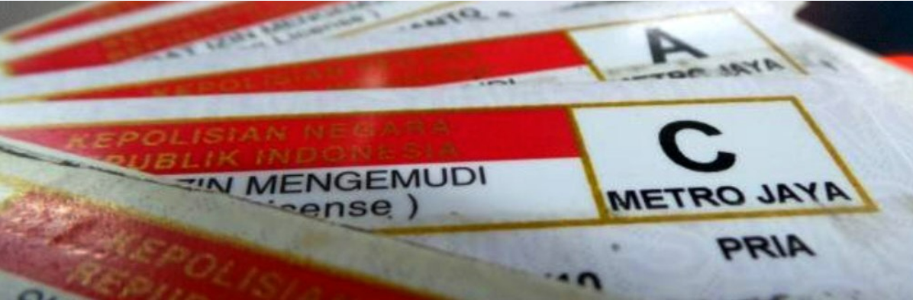

Surat Izin Mengemudi

Penjelasan
SIM (Surat Ijin Mengemudi) adalah bukti registrasi dan identifikasi yang diberikan oleh Polri kepada seseoraang yang telah memenuhi persyaratan administrasi, sehat jasmani dan rohani, memahami peraturan lalu lintas dan trampil mengemudikan kendaraan bermotor.
Jenis-jenis
- SIM A: Untuk mengemudikan kendaraan roda empat seperti mobil penumpang, bus, dan truk dengan berat di bawah 3.500 kilogram.
- SIM B1: Untuk mengemudikan kendaraan roda empat dengan berat di atas 3.500 kilogram.
- SIM B1 Umum: Mirip dengan SIM B1, tetapi khusus untuk angkutan umum.
- SIM C: Untuk mengemudikan sepeda motor.
- SIM D: Untuk mengemudikan sepeda motor roda tiga dan empat.
Persyaratan Umum
- Umur minimal untuk mengajukan SIM adalah 17 tahun untuk SIM C, dan 20 tahun untuk SIM A dan B.
- Pemohon harus sehat jasmani dan rohani.
- Pemohon wajib mengikuti ujian teori dan ujian praktik mengemudi.
Fungsi dan Peranan
- Sebagai sarana identifikasi / jati diri seseorang
- Sebagai alat bukti
- Sebagai sarana pelayanan masyarakat
- Sebagai sarana upaya paksa
Setiap pengemudi kendaraan bermotor wajib memiliki SIM peraturan ini tercantum pada Pasal 18 (1) UU No. 14 Th 1992 tentang Lalu-lintas dan Angkutan Jalan, bahwa setiap pengemudi kendaraan bermotor diwilayah wajib memiliki Surat Ijin Mengemudi (SIM).
Dasar Hukum
- UU No.2 Tahun 2002
- Pasal 14 ayat (1) b
- Pasal 15 ayat (2) c
- Peraturan Pemerintah No. 44 / 1993 Pasal 216